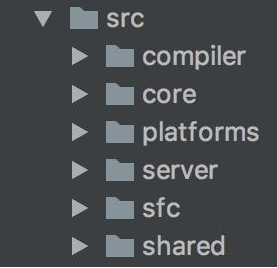
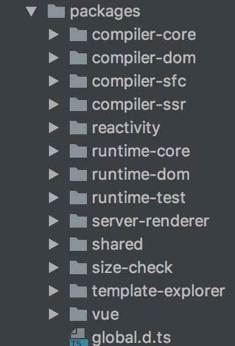
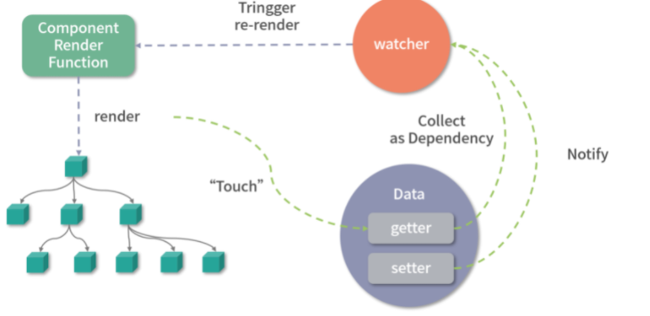
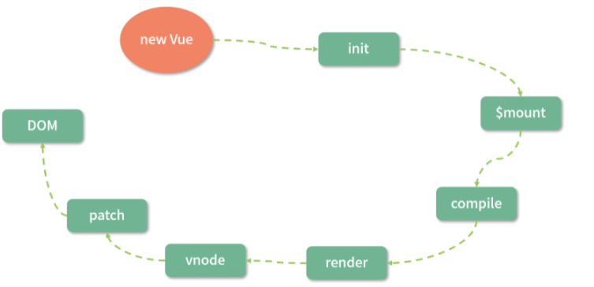
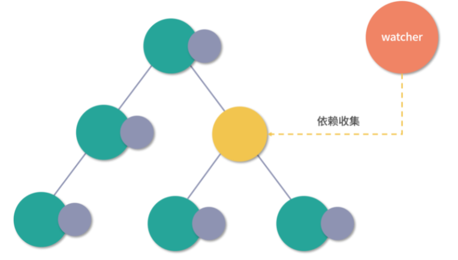
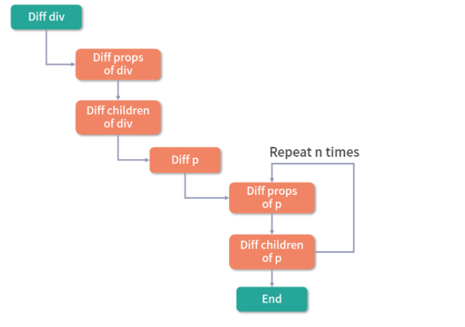
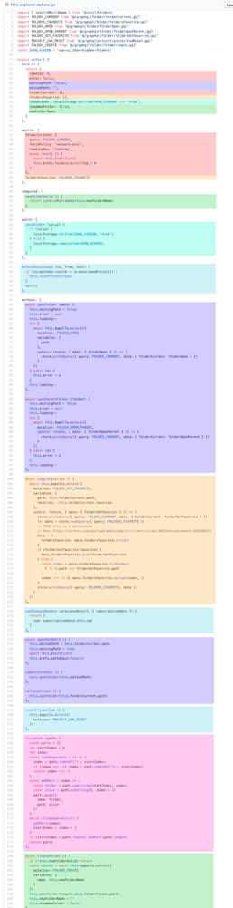
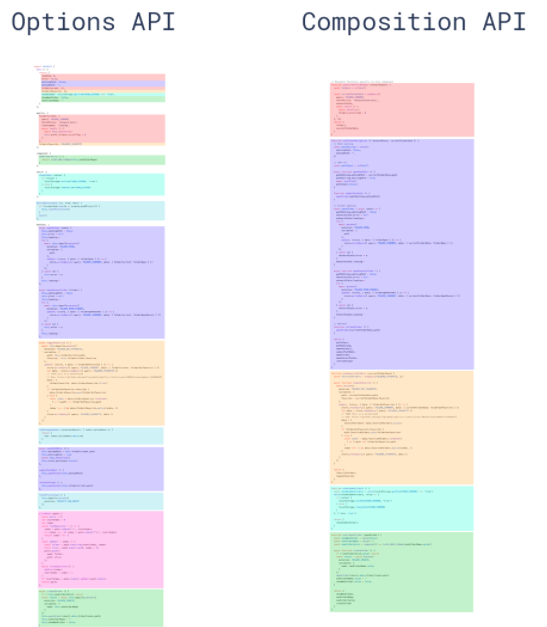

源码优化
源码优化目的是让代码更易于开发和维护。源码的优化主要体现在使用 monorepo 和 TypeScript 管理和开发源码。
更好的代码管理方式 monorepo
Monorepo 简单的说，是指将公司的所有代码放到一个 Git / Mercurial / Subversion 的代码仓库中。
这并不是说代码没有组织都放在
./src文件夹里面。相反，通过使用 Buck / Bazel，monorepo 中的代码都是分割到一个个小的模块中的。这样的分割，每个人大部分时间其实仍然只是工作在少数的几个文件夹以内的，并不会导致一个 IDE 打不开太大的项目之类的事情。但是很多事情就简单了很多。
首先，源码的优化体现在代码管理方式上。Vue.js 2.x 的源码托管在 src 目录，然后依据功能拆分出了 compiler（模板编译的相关代码）、core（与平台无关的通用运行时代码）、platforms（平台专有代码）、server（服务端渲染的相关代码）、sfc（.vue 单文件解析相关代码）、shared（共享工具代码） 等目录：

而到了 Vue.js 3.0 ，整个源码是通过 monorepo 的方式维护的，根据功能将不同的模块拆分到 packages 目录下面不同的子目录中：

可以看出相对于 Vue.js 2.x 的源码组织方式，monorepo 把这些模块拆分到不同的 package 中，每个 package 有各自的 API、类型定义和测试。这样使得模块拆分更细化，职责划分更明确，模块之间的依赖关系也更加明确，开发人员也更容易阅读、理解和更改所有模块源码，提高代码的可维护性。
另外一些 package（比如 reactivity 响应式库）是可以独立于 Vue.js 使用的，这样用户如果只想使用 Vue.js 3.0 的响应式能力，可以单独依赖这个响应式库而不用去依赖整个 Vue.js，减小了引用包的体积大小，而 Vue.js 2 .x 是做不到这一点的。
有类型的 JavaScript: TypeScript
Vue.js 1.x 版本的源码是没有用类型语言的，小右用 JavaScript 开发了整个框架，但对于复杂的框架项目开发，使用类型语言非常有利于代码的维护，因为它可以在编码期间帮你做类型检查，避免一些因类型问题导致的错误；也可以利于它去定义接口的类型，利于 IDE 对变量类型的推导。
因此在重构 2.0 的时候，小右选型了 Flow，但是在 Vue.js 3.0 的时候抛弃 Flow 转而采用 TypeScript 重构了整个项目，这里有两方面原因，接下来我们具体说一下。
首先，Flow 是 Facebook 出品的 JavaScript 静态类型检查工具，它可以以非常小的成本对已有的 JavaScript 代码迁入，非常灵活，这也是 Vue.js 2.0 当初选型它时一方面的考量。但是 Flow 对于一些复杂场景类型的检查，支持得并不好。记得在看 Vue.js 2.x 源码的时候，在某行代码的注释中看到了对 Flow 的吐槽，比如在组件更新 props 的地方出现了：
1 | const propOptions: any = vm.$options.props // wtf flow? |
什么意思呢？其实是由于这里 Flow 并没有正确推导出 vm.$options.props 的类型 ，开发人员不得不强制申明 propsOptions 的类型为 any，显得很不合理；另外他也在社区平台吐槽过 Flow 团队的烂尾。
其次，Vue.js 3.0 抛弃 Flow 后，使用 TypeScript 重构了整个项目。 TypeScript提供了更好的类型检查，能支持复杂的类型推导；由于源码就使用 TypeScript 编写，也省去了单独维护 d.ts 文件的麻烦；就整个 TypeScript 的生态来看，TypeScript 团队也是越做越好，TypeScript 本身保持着一定频率的迭代和更新，支持的 feature 也越来越多。
性能优化
源码体积优化
首先是源码体积优化，我们在平时工作中也经常会尝试优化静态资源的体积，因为 JavaScript 包体积越小，意味着网络传输时间越短，JavaScript 引擎解析包的速度也越快。
那么，Vue.js 3.0 在源码体积的减少方面做了哪些工作呢？
-
首先，移除一些冷门的 feature（比如 filter、inline-template 等）；
-
其次，引入 tree-shaking 的技术，减少打包体积。
第一点很好理解，所以这里我们来看看 tree-shaking，它的原理很简单，tree-shaking 依赖 ES2015 模块语法的静态结构（即 import 和 export），通过编译阶段的静态分析，找到没有引入的模块并打上标记。
举个例子，一个 math 模块定义了 2 个方法 square(x) 和 cube(x) ：
1 | export function square(x) { |
我们在这个模块外面只引入了 cube 方法：
1 | import { cube } from './math.js' |
最终 math 模块会被 webpack 打包生成如下代码：
1 | /* 1 */ |
可以看到，未被引入的 square 模块被标记了， 然后压缩阶段会利用例如 uglify-js、terser 等压缩工具真正地删除这些没有用到的代码。
也就是说，利用 tree-shaking 技术，如果你在项目中没有引入 Transition、KeepAlive 等组件，那么它们对应的代码就不会打包，这样也就间接达到了减少项目引入的 Vue.js 包体积的目的。
数据劫持优化
在 Vue.js 内部，想实现这个功能是要付出一定代价的，那就是必须劫持数据的访问和更新。其实这点很好理解，当数据改变后，为了自动更新 DOM，那么就必须劫持数据的更新，也就是说当数据发生改变后能自动执行一些代码去更新 DOM，那么问题来了，Vue.js 怎么知道更新哪一片 DOM 呢？因为在渲染 DOM 的时候访问了数据，我们可以对它进行访问劫持，这样就在内部建立了依赖关系，也就知道数据对应的 DOM 是什么了。以上只是大体的思路，具体实现要比这更复杂，内部还依赖了一个 watcher 的数据结构做依赖管理，参考下图：

Vue.js 1.x 和 Vue.js 2.x 内部都是通过 Object.defineProperty 这个 API 去劫持数据的 getter 和 setter，具体是这样的：
1 | Object.defineProperty(data, 'a',{ |
但这个 API 有一些缺陷，它必须预先知道要拦截的 key 是什么，所以它并不能检测对象属性的添加和删除。尽管 Vue.js 为了解决这个问题提供了 $set 和 $delete 实例方法，但是对于用户来说，还是增加了一定的心智负担。
另外 Object.defineProperty 的方式还有一个问题，举个例子，比如这个嵌套层级比较深的对象：
1 | export default { |
由于 Vue.js 无法判断你在运行时到底会访问到哪个属性，所以对于这样一个嵌套层级较深的对象，如果要劫持它内部深层次的对象变化，就需要递归遍历这个对象，执行 Object.defineProperty 把每一层对象数据都变成响应式的。毫无疑问，如果我们定义的响应式数据过于复杂，这就会有相当大的性能负担。
为了解决上述 2 个问题，Vue.js 3.0 使用了 Proxy API 做数据劫持，它的内部是这样的：
1 | observed = new Proxy(data, { |
由于它劫持的是整个对象，那么自然对于对象的属性的增加和删除都能检测到。
但要注意的是，Proxy API 并不能监听到内部深层次的对象变化，因此 Vue.js 3.0 的处理方式是在 getter 中去递归响应式，这样的好处是真正访问到的内部对象才会变成响应式，而不是无脑递归，这样无疑也在很大程度上提升了性能，我会在后面分析响应式章节详细介绍它的具体实现原理。
编译优化

这是 Vue.js 2.x 从 new Vue 开始渲染成 DOM 的流程，上面说过的响应式过程就发生在图中的 init 阶段，另外 template compile to render function 的流程是可以借助 vue-loader 在 webpack 编译阶段离线完成，并非一定要在运行时完成。
所以想优化整个 Vue.js 的运行时，除了数据劫持部分的优化，我们可以在耗时相对较多的 patch 阶段想办法，Vue.js 3.0 也是这么做的，并且它通过在编译阶段优化编译的结果，来实现运行时 patch 过程的优化。
我们知道，通过数据劫持和依赖收集，Vue.js 2.x 的数据更新并触发重新渲染的粒度是组件级的：

虽然 Vue 能保证触发更新的组件最小化，但在单个组件内部依然需要遍历该组件的整个 vnode 树，举个例子，比如我们要更新这个组件：
1 | <template> |
整个 diff 过程如图所示：

可以看到，因为这段代码中只有一个动态节点，所以这里有很多 diff 和遍历其实都是不需要的，这就会导致 vnode 的性能跟模版大小正相关，跟动态节点的数量无关，当一些组件的整个模版内只有少量动态节点时，这些遍历都是性能的浪费。
而对于上述例子，理想状态只需要 diff 这个绑定 message 动态节点的 p 标签即可。
Vue.js 3.0 做到了，它通过编译阶段对静态模板的分析，编译生成了 Block tree。Block tree 是一个将模版基于动态节点指令切割的嵌套区块，每个区块内部的节点结构是固定的，而且每个区块只需要以一个 Array 来追踪自身包含的动态节点。借助 Block tree，Vue.js 将 vnode 更新性能由与模版整体大小相关提升为与动态内容的数量相关，这是一个非常大的性能突破。
除此之外，Vue.js 3.0 在编译阶段还包含了对 Slot 的编译优化、事件侦听函数的缓存优化，并且在运行时重写了 diff 算法。
语法API优化： Composition API
Vue.js 2.x 中，框架背后帮我们做了很多事情，比如我们在 data 中定义的变量，在组件实例化阶段会把它们变成响应式的，这个行为是黑盒的，用户是无感知的。反观 Vue.js 3.0 Composition API，用户会利用 reactive 或者 ref API 主动去声明一个响应式对象。
所以通过 Composition API 去编写组件，用户更清楚自己在做什么事情。
优化逻辑组织
在 Vue.js 1.x 和 2.x 版本中，编写组件本质就是在编写一个“包含了描述组件选项的对象”，我们把它称为 Options API，它的好处是在于写法非常符合直觉思维，对于新手来说这样很容易理解，这也是很多人喜欢 Vue.js 的原因之一。
Options API 的设计是按照 methods、computed、data、props 这些不同的选项分类，当组件小的时候，这种分类方式一目了然；但是在大型组件中，一个组件可能有多个逻辑关注点，当使用 Options API 的时候，每一个关注点都有自己的 Options，如果需要修改一个逻辑点关注点，就需要在单个文件中不断上下切换和寻找。
举一个官方例子 Vue CLI UI file explorer，它是 vue-cli GUI 应用程序中的一个复杂的文件浏览器组件。这个组件需要处理许多不同的逻辑关注点：
-
跟踪当前文件夹状态并显示其内容
-
处理文件夹导航（比如打开、关闭、刷新等）
-
处理新文件夹的创建
-
切换显示收藏夹
-
切换显示隐藏文件夹
-
处理当前工作目录的更改
如果我们按照逻辑关注点做颜色编码，就可以看到当使用 Options API 去编写组件时，这些逻辑关注点是非常分散的：

Vue.js 3.0 提供了一种新的 API：Composition API，它有一个很好的机制去解决这样的问题，就是将某个逻辑关注点相关的代码全都放在一个函数里，这样当需要修改一个功能时，就不再需要在文件中跳来跳去。
通过下图，我们可以很直观地感受到 Composition API 在逻辑组织方面的优势：

优化逻辑复用
当我们开发项目变得复杂的时候，免不了需要抽象出一些复用的逻辑。在 Vue.js 2.x 中，我们通常会用 mixins 去复用逻辑，举一个鼠标位置侦听的例子，我们会编写如下函数 mousePositionMixin：
1 | const mousePositionMixin = { |
然后在组件中使用：
1 | <template> |
使用单个 mixin 似乎问题不大，但是当我们一个组件混入大量不同的 mixins 的时候，会存在两个非常明显的问题：命名冲突和数据来源不清晰。
首先每个 mixin 都可以定义自己的 props、data，它们之间是无感的，所以很容易定义相同的变量，导致命名冲突。另外对组件而言，如果模板中使用不在当前组件中定义的变量，那么就会不太容易知道这些变量在哪里定义的，这就是数据来源不清晰。但是Vue.js 3.0 设计的 Composition API，就很好地帮助我们解决了 mixins 的这两个问题。
我们来看一下在 Vue.js 3.0 中如何书写这个示例：
1 | import { ref, onMounted, onUnmounted } from 'vue' |
这里我们约定 useMousePosition 这个函数为 hook 函数，然后在组件中使用：
1 | <template> |
可以看到，整个数据来源清晰了，即使去编写更多的 hook 函数，也不会出现命名冲突的问题。
Composition API 除了在逻辑复用方面有优势，也会有更好的类型支持，因为它们都是一些函数，在调用函数时，自然所有的类型就被推导出来了，不像 Options API 所有的东西使用 this。另外，Composition API 对 tree-shaking 友好，代码也更容易压缩。
虽然 Composition API 有诸多优势，它也不是一点缺点都没有，关于它的具体用法和设计原理，我们会在后续的章节详细说明。这里还需要说明的是，Composition API 属于 API 的增强，它并不是 Vue.js 3.0 组件开发的范式，如果你的组件足够简单，你还是可以使用 Options API。
引入 RFC: 使每个版本可控
作为一个流行开源框架的作者，小右可能每天都会收到各种各样的 feature request。但并不是社区一有新功能的需求，框架就会立马支持，因为随着 Vue.js 的用户越来越多，小右会更加重视稳定性，会仔细考虑所做的每一个可能对最终用户影响的更改，以及有意识去防止新 API 对框架本身实现带来的复杂性的提升。
因此在 Vue.js 2.x 版本开发到后期的阶段 ，小右就启用了 RFC ，它的全称是 Request For Comments，旨在为新功能进入框架提供一个一致且受控的路径。当社区有一些新需求的想法时，它可以提交一个 RFC，然后由社区和 Vue.js 的核心团队一起讨论，如果这个 RFC 最终被通过了，那么它才会被实现。比如 2.6 版本对于 slot 新 API 的改动，就是这条 RFC 里。
到了 Vue.js 3.0 ，小右在实现代码前就大规模启用 RFC，来确保他的改动和设计都是经过讨论并确认的，这样可以避免走弯路。Vue.js 3.0 版本有很多重大的改动，每一条改动都会有对应的 RFC，通过阅读这些 RFC，你可以了解每一个 feature 采用或被废弃掉的前因后果。
Vue.js 3.0 目前已被实现并合并的 RFC 都在这里，通过阅读它们，你也可以大致了解 Vue.js 3.0 的一些变化，以及为什么会产生这些变化，帮助你了解它的前因后果。
If you like this blog or find it useful for you, you are welcome to comment on it. You are also welcome to share this blog, so that more people can participate in it. If the images used in the blog infringe your copyright, please contact the author to delete them. Thank you !